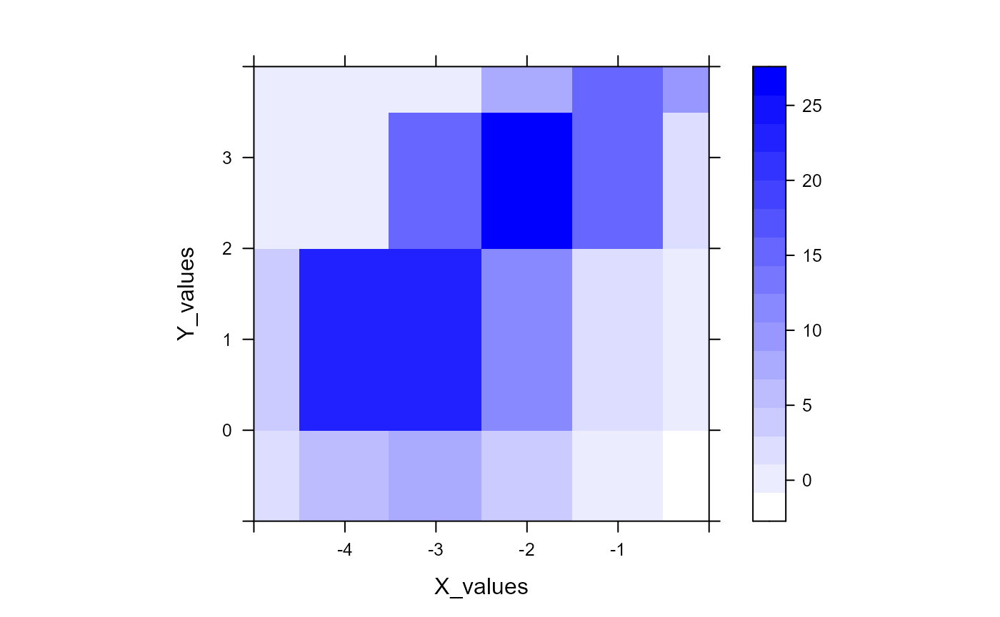
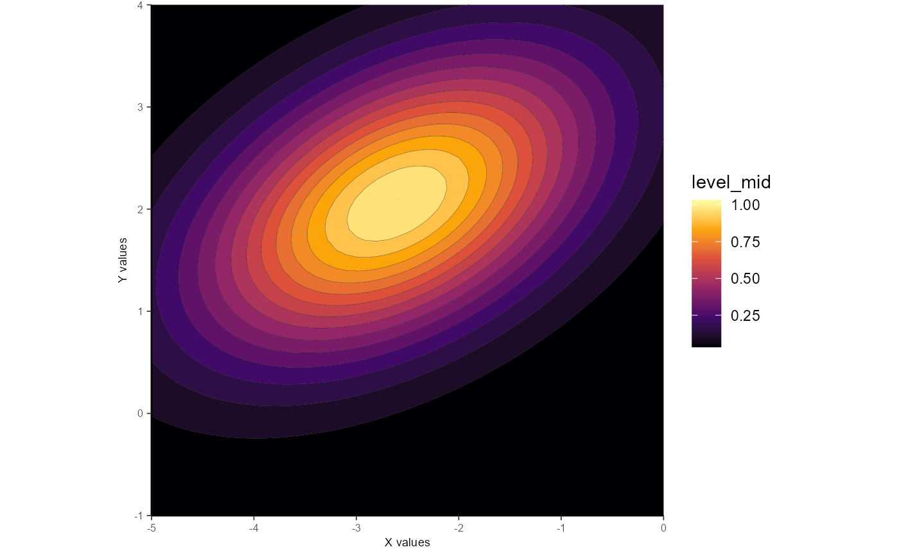

vignettes/fit_gaussian_2D.Rmd
fit_gaussian_2D.RmdThe function fit_gaussian_2D() can be used fit 2D Gaussians to data, and has several methods for how the fitting is implemented. This vignette will run you through what these methods mean with worked examples.
We’ll begin by loading gaussplotR and loading the sample data set provided within. The raw data we’d like to use are in columns 1:3, so we’ll shave the data set down to those columns before running through the examples.
library(gaussplotR) ## Load the sample data set data(gaussplot_sample_data) ## The raw data we'd like to use are in columns 1:3 samp_dat <- gaussplot_sample_data[,1:3]
It generally helps to plot the data beforehand to get a sense of its overall shape. We’ll simply produce a contour plot.
library(ggplot2); library(metR) ggplot2::ggplot(samp_dat, aes(X_values, Y_values, z = response)) + metR::geom_contour_fill(aes(fill = ..level..), size = 0.04, bins = 14) + scale_fill_viridis_c(direction = 1, option = "B") + coord_fixed( xlim = c(-5, 0), ylim = c(-1, 4), expand = FALSE ) + theme_classic()

method and orientation_strategy argumentsmethod
gaussplotR::fit_gaussian_2D() has three main options for its method argument: 1) "elliptical", 2) "elliptical_log", or 3) "circular".
The most generic method (and the default) is method = "elliptical". This allows the fitted 2D Gaussian to take an ellipsoid shape. If you would like the best-fitting 2D Gaussian, this is most likely your best bet.
A slightly-altered method to fit an ellipsoid Gaussian is available in method = "elliptical_log". This method follows Priebe et al. 20031 and is geared towards use with log2-transformed data.
A third option is method = "circular". This produces a very simple 2D Gaussian that is constrained to have to have a roughly circular shape (i.e. spread in X- and Y- are roughly equal).
An additional argument, orientation_strategy gives additional control over the orientation of the fitted Gaussian. By default, the orientation_strategy is "unconstrained", meaning that the best-fit orientation is returned.
orientation_strategy
Setting orientation_strategy to a numeric (e.g. orientation_strategy = pi/2) will force the orientation of the Gaussian to the specified value, but this is only available when using method = "elliptical" or method = "elliptical_log"
Note that supplying a numeric to orientation_strategy is handled differently by method = "elliptical" vs method = "elliptical_log". With method = "elliptical", a theta parameter dictates the rotation, in radians, from the x-axis in the clockwise direction. Thus, using method = "elliptical", orientation_strategy = pi/2 will return parameters for an elliptical 2D Gaussian that is constrained to a 90-degree (pi/2) orientation. In contrast, the method = "elliptical_log" procedure uses a Q parameter to determine the orientation of the 2D Gaussian. Setting method = "elliptical_log", orientation_strategy = 0 will result in a diagonally-oriented Gaussian, whereas setting orientation_strategy = -1 will result in horizontal orientation. Again, see Priebe et al. 2003 for more details.
Unconstrained ellipticals are the default option and are generally recommended for most purposes. Here’s an example:
gauss_fit_ue <- fit_gaussian_2D(samp_dat) gauss_fit_ue #> A_o Amp theta X_peak Y_peak a b #> 1 0.8272979 32.25134 3.581234 -2.638124 2.021262 0.9072481 0.9611334 attributes(gauss_fit_ue) #> $names #> [1] "A_o" "Amp" "theta" "X_peak" "Y_peak" "a" "b" #> #> $class #> [1] "data.frame" #> #> $row.names #> [1] 1 #> #> $fit_method #> [1] "elliptical_unconstr"
Fitting an unconstrained ellipse returns an object (here: gauss_fit_ue) that is a data.frame with one column per fitted parameter. The fitted parameters are: A_o (a constant term), Amp (amplitude), theta (rotation, in radians, from the x-axis in the clockwise direction), X_peak (x-axis peak location), Y_peak (y-axis peak location), a (width of Gaussian along x-axis), and b (width of Gaussian along y-axis).
Note that the attribute fit_method indicates that an "elliptical_unconstr" approach was used. This attribute is used by predict_gaussian_2D() to automatically determine what method (and therefore, identity of parameters) was used and then sample points from that fitted Gaussian.
We can elect to sample more points from the fitted Gaussian by feeding in a grid of x- and y- values on which to predict (via expand.grid().
Then, the fitted object gauss_fit_ue along with the grid of points can be supplied to predict_gaussian_2D to sample more points from the fit, which can be useful for plotting.
## Generate a grid of x- and y- values on which to predict grid <- expand.grid(X_values = seq(from = -5, to = 0, by = 0.1), Y_values = seq(from = -1, to = 4, by = 0.1)) ## Predict the values using predict_gaussian_2D gauss_data_ue <- predict_gaussian_2D( fit_params = gauss_fit_ue, X_values = grid$X_values, Y_values = grid$Y_values, ) ## Plot via ggplot2 and metR ggplot_gaussian_2D(gauss_data_ue)
As noted above, the orientation_strategy can be used to dictate the orientation. Please note that this will very likely result in a poorer fit, but may be useful for certain types of analyses.
Here we’ll force the Gaussian to be horizontally-oriented.
gauss_fit_ce <- fit_gaussian_2D(samp_dat, orientation_strategy = 0) gauss_fit_ce #> A_o Amp theta X_peak Y_peak a b #> 1 1.258792 24.7628 0 -2.526293 1.94949 1.199365 1.327613
We’ll use the same grid of x- and y- points as above
## Predict the values using predict_gaussian_2D gauss_data_ce <- predict_gaussian_2D( fit_params = gauss_fit_ce, X_values = grid$X_values, Y_values = grid$Y_values, ) ## Plot via ggplot2 and metR ggplot_gaussian_2D(gauss_data_ce)
This procedure follows the formula used in Priebe et al. 2003 and is geared towards log2-transformed data (which the example data are).
Parameters from this model include: Amp (amplitude), Q (orientation parameter), X_peak (x-axis peak location), Y_peak (y-axis peak location), X_sig (spread along x-axis), and Y_sig (spread along y-axis).
gauss_fit_uel <- fit_gaussian_2D(samp_dat, method = "elliptical_log") gauss_fit_uel #> Amp Q X_peak Y_peak X_sig Y_sig #> 1 25.72529 -0.138314 -2.600045 2.016568 2.385995 1.63209 ## Predict the values using predict_gaussian_2D gauss_data_uel <- predict_gaussian_2D( fit_params = gauss_fit_uel, X_values = grid$X_values, Y_values = grid$Y_values, ) ## Plot via ggplot2 and metR ggplot_gaussian_2D(gauss_data_uel)
Similar to the above, but here the orientation_strategy can be used to dictate the value of the Q parameter used in Priebe et al. 2003. Setting Q to 0 will result in a diagonally-oriented Gaussian, whereas setting Q to -1 will result in horizontal orientation. Q is a continuous parameter, so values in between may be used as well, such as in this example:
gauss_fit_cel <- fit_gaussian_2D( samp_dat, method = "elliptical_log", orientation_strategy = -0.66 ) gauss_fit_cel #> Amp Q X_peak Y_peak X_sig Y_sig #> 1 25.72529 -0.66 -2.552716 2.034853 2.201506 1.678929 ## Predict the values using predict_gaussian_2D gauss_data_cel <- predict_gaussian_2D( fit_params = gauss_fit_cel, X_values = grid$X_values, Y_values = grid$Y_values, ) ## Plot via ggplot2 and metR ggplot_gaussian_2D(gauss_data_cel)

Again, setting the value of Q via orientation_strategy will very likely result in poorer-fitting Gaussians. See the analyses in Priebe et al. 2003 to get a sense of useful applications of this approach. Forcing Q = -0.66 in the above example isn’t all that useful, but goes to show that it can be done.
Using method = "circular" constrains the Gaussian to have a roughly circular shape (i.e. spread in X- and Y- are roughly equal).
If this method is used, the fitted parameters are: Amp (amplitude), X_peak (x-axis peak location), Y_peak (y-axis peak location), X_sig (spread along x-axis), and Y_sig(spread along y-axis).
gauss_fit_cir <- fit_gaussian_2D(samp_dat, method = "circular") gauss_fit_cir #> Amp X_peak Y_peak X_sig Y_sig #> 1 23.17999 -2.546653 1.81116 1.316288 1.642647 ## Predict the values using predict_gaussian_2D gauss_data_cir <- predict_gaussian_2D( fit_params = gauss_fit_cir, X_values = grid$X_values, Y_values = grid$Y_values, ) ## Plot via ggplot2 and metR ggplot_gaussian_2D(gauss_data_cir)
That’s all!
üê¢
Priebe NJ, Cassanello CR, Lisberger SG. The neural representation of speed in macaque area MT/V5. J Neurosci. 2003 Jul 2;23(13):5650-61. doi: 10.1523/JNEUROSCI.23-13-05650.2003.↩